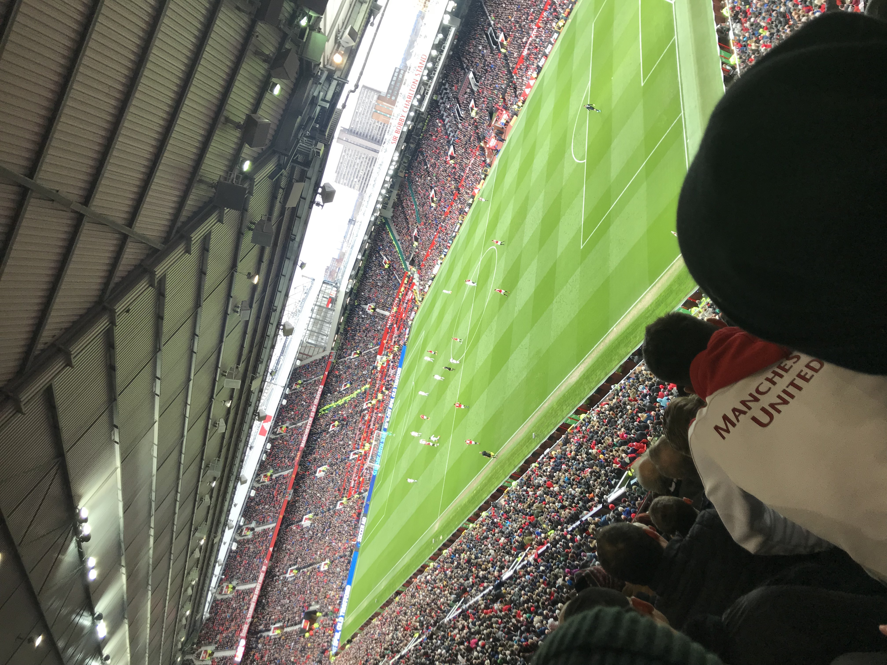
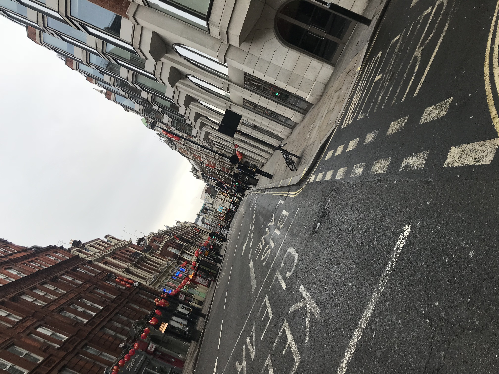
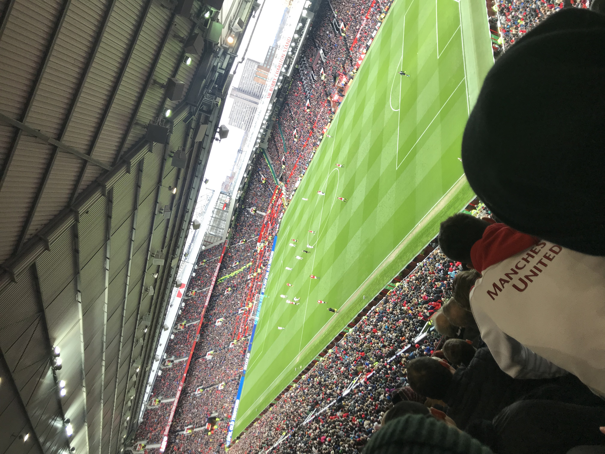
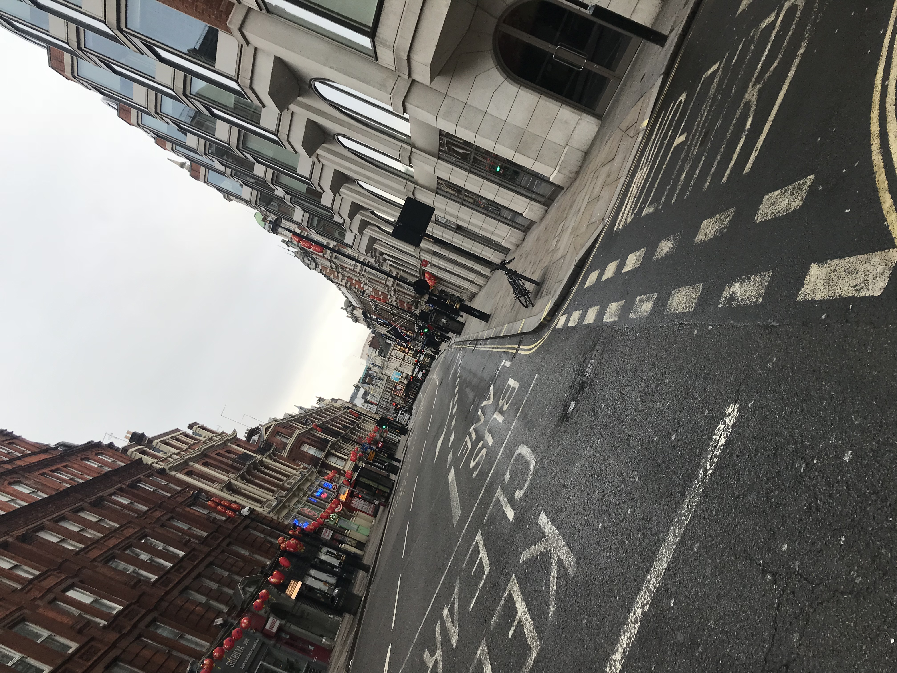

England
In March 2018 I have the priviledge of traveling to the United Kingdom where I was presenting a research paper in Sheffield, England. During my time in Sheffield I had the chance to explore the city and enjoy the beautiful scenery. There were plenty of places to take walks or hikes. I was fortunate to have many friends who attended the conference as well so we were able to go out and explore just about every night we were there.
After the conference was over, I traveled to London where there were endless places to site see. My favorite part about getting around in the city was taking the "tube" or subway system. I got in the habit of getting lost with my friends in the city just so we can have an excuse to visit as many places as we good and go the the variety of restaurants located in the city.
Perhaps on of the more memorable things I did while in England was attend a football (soccer) match in Manchester. I just starting to get back into the sport and knew how big soccer was in the UK. Lucky for me, I was flying out of Manchester and found out there was a match being played in the city the day before I left so I was able to attend a Manchester United game!
 


